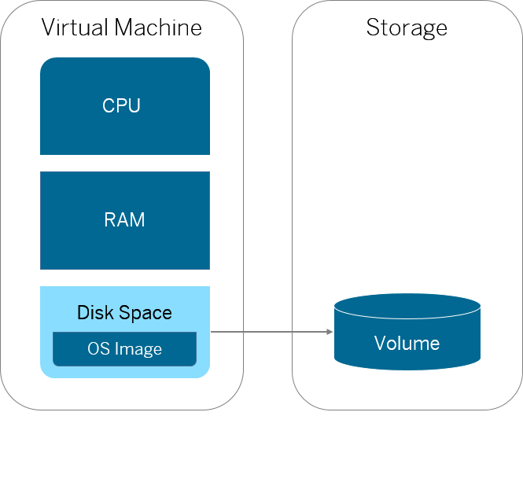

You can use the SAP Cloud Platform virtual machines to install and maintain your own applications in scenarios not covered by the platform.
Virtual machines are currently available only in the data center in Europe. SAP Cloud Platform systems in other data centers can communicate with virtual machines only via public Internet, so you have to architect your applications accordingly.
As the owner of a virtual machine, you are responsible for applying patches on the operating system and for triggering backups via snapshots.
Backup services for the virtual machine volumes can be triggered manually, however they are not part of SAP’s disaster recovery and contingency strategies. This means that the underlying infrastructure used to store snapshots and volumes is set up in a cluster running in High Availability mode. However, if a disaster occurs (that is, the whole infrastructure crashes), there will be no backup and recovery possible. Thus, you may consider storing your data by means of the persistence services offered by SAP Cloud Platform or on other systems.
An SAP Cloud Platform virtual machine is the virtualized hardware resources (CPU, RAM, disk space, installed OS) on which the installed software runs. The virtual machines come with a SUSE Linux Enterprise Server installed. For more information about the currently supported version, see Patching the OS Image.
You create virtual machines on which you install your own software different from the programming models supported by the platform.
Each virtual machine has a volume - the storage behind the file system and all software installed on it.

For each SAP Cloud Platform account, a quota for virtual machines with certain sizes can be configured. You can distribute quota to virtual machines when you open the SAP Cloud Platform cockpit and navigate to Quota Management.
| Virtual Machine Size | CPU Core | RAM (GB) | Disk storage (GB) |
|---|---|---|---|
|
xs |
1 |
2 |
20 |
|
s |
2 |
4 |
40 |
|
m |
4 |
8 |
80 |
|
l |
8 |
16 |
160 |
|
xl |
16 |
32 |
320 |
You can
Create a virtual machine, connect to it and manage its lifecycle
As the owner of the virtual machine, you can install your software that will be hosted on SAP Cloud Platform. You have to make sure that the software you install on the virtual machines has the necessary licenses. Also, you need to take care of updating them with the latest patches.
For more information, see Managing Virtual Machines.
Configure communication to the virtual machine
By default, outbound communication from the virtual machines to the Internet and other systems is allowed, but inbound communication has to be configured.
For more information, see Enabling Communication from SAP Cloud Platform Systems and Enabling Internet Access.
Manage virtual machine volumes
Each virtual machine has a volume that stores the file system and all software installed on it. You can create a new virtual machine with the same volume and delete a volume.
For more information, see Managing Volumes.
Create a snapshot of a virtual machine volume
You can take a snapshot of an existing virtual machine volume and use it to create a new virtual machine with the same file system.
For more information, see Managing Volume Snapshots.
Consume a SAP HANA database from a virtual machine
For more information, see Consuming an SAP HANA Database From a Virtual Machine.